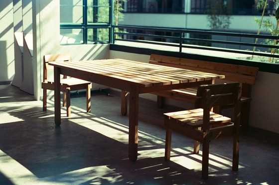
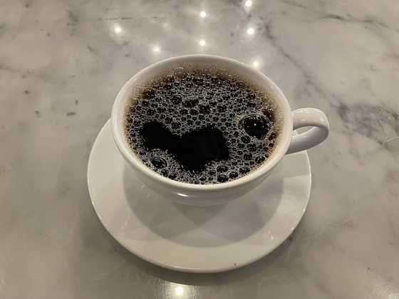
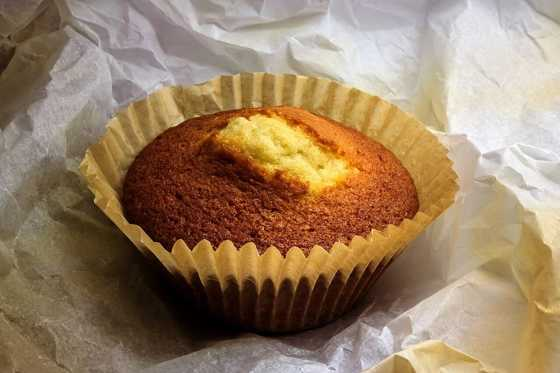
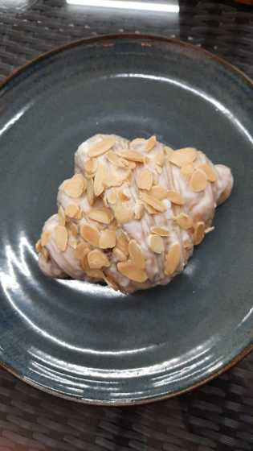
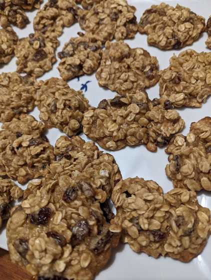

富山県射水市・新湊内川沿いのカフェ
内川のほとりで、
ゆっくりひと息つく一杯を。
川沿いのまちを歩いた足を休めて、あたたかい飲みものと甘いものを。そんな時間を過ごせるカフェです。
※コンセプトの一文は制作側のイメージです。

VOICE
口コミ(イメージ例)
以下は制作側が作成した創作のイメージです。実在のお客様の声ではありません。
イメージ例川沿いの散歩の途中に立ち寄りました。窓の外をながめながら、ゆっくり過ごせました。
イメージ例落ち着いた雰囲気で、ひとりでも入りやすそうなお店というイメージです。
イメージ例甘いものと飲みもので、ほっとひと息。新湊を訪れたらまた寄りたいと思いました。




ABOUT
お店のこと
内川カフェは、富山県射水市の新湊・内川沿いにあるカフェです。Instagramのプロフィールには「富山、新湊内川沿いのカフェ」と記されています。2026年8月に新しくオープンしたお店として、飲食店情報サイトに掲載されています。
店名の由来やオーナーの想いは、現時点で確認できていないため掲載していません。上記以外の文章は制作側の表現です。
| 所在地 | 〒934-0012 富山県射水市中央町1-3 |
|---|---|
| 電話 | 準備中 |
| 営業時間 | 準備中 |
| 定休日 | 準備中 |
| SNS | Instagram @uchikawa_cafe |